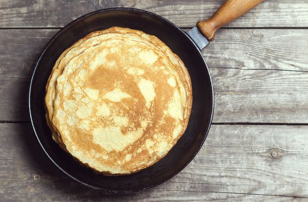

Crêpes

Description
De délicieuses crêpes pour toutes les papilles. Leur onctuosité vous laissera sans voix.
Ingredients
- Lait
- Oeufs
- Beurre
- sucre
- farine
Steps
-
Dans un saladier, mélanger la farine, le sel et le sucre.
-
Faire une fontaine.
-
Ajouter les oeufs et commencer à les incorporer à la farine avec une cuillère en bois,
ajouter le beure fondu (tiédi) peu à peu et bien malaxer.
-
Incorporer le lait (par petites quantités au début pour éviter les grumeaux), ajouter le parfum.
-
Faire cuire les crêpes dans une poêle chaude huilée.